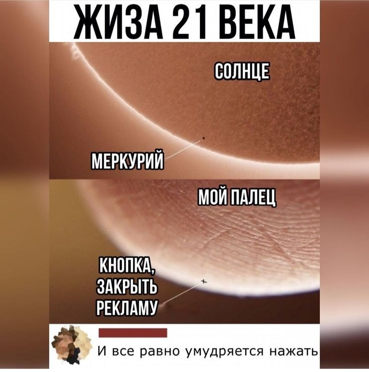
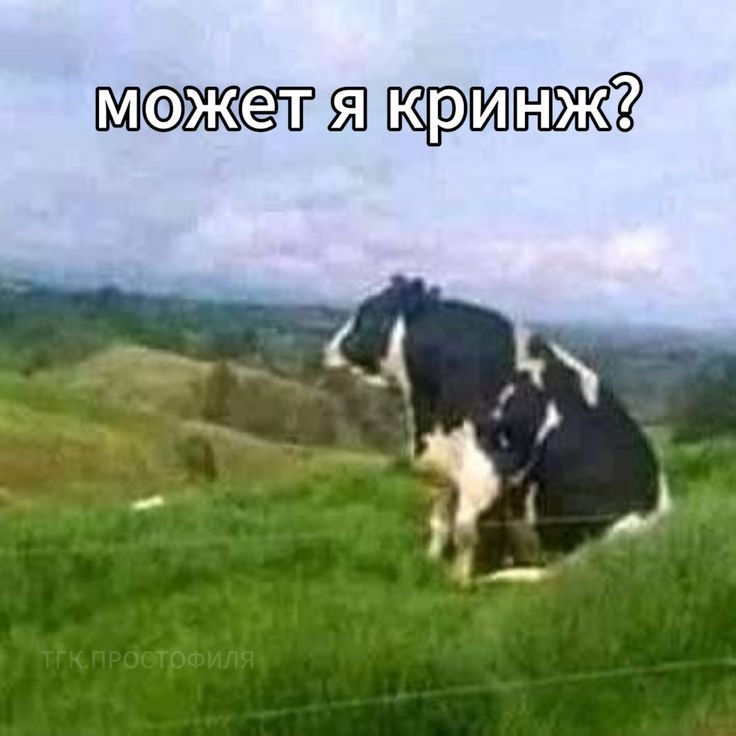
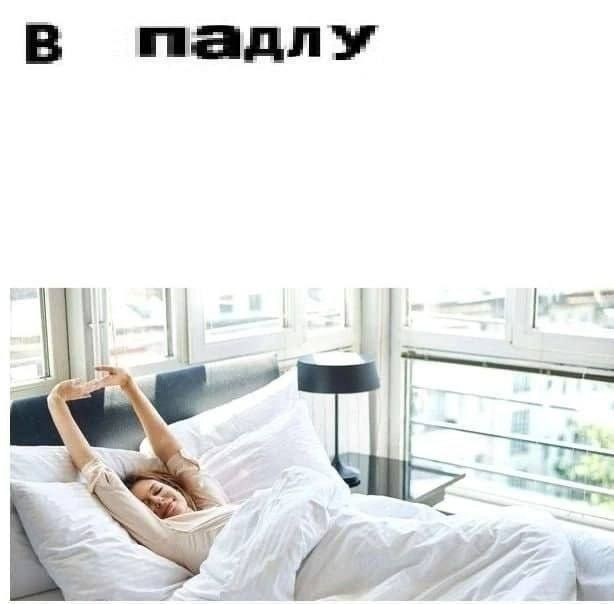
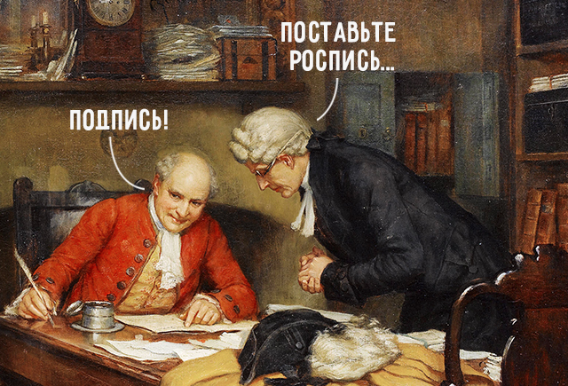
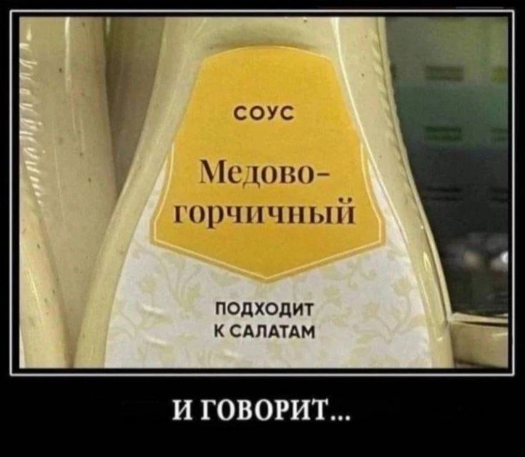
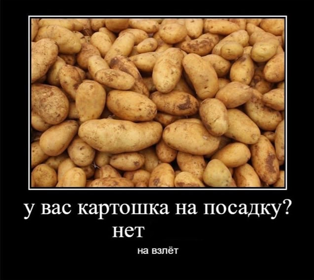

Изучаем лексику через мемы
Весёлый способ выучить современный язык, сленг и устойчивые выражения
Слэнги

Что такое жиза?

А может ты кринж?

Впадлу объяснять!
Паронимы: не перепутай!
Подпись vs. Роспись
✔ Правильный вариант: «Поставьте подпись»
💭 Разница:
Подпись – личное написание имени, автограф.
Роспись – художественное оформление, рисунки.
✦ Мастер сделал красивую роспись на стене, а я поставил подпись в документе.
Омонимы

Значения слова "подходит"

Значения слова "посадка"